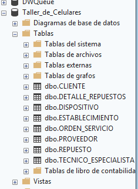
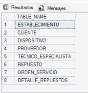
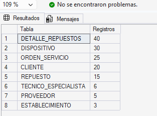
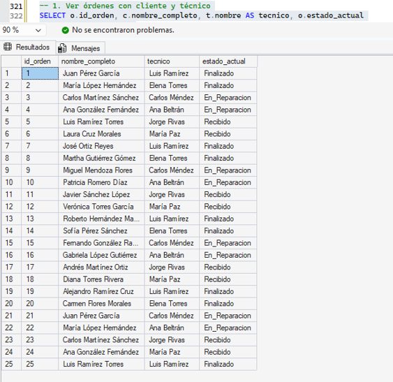
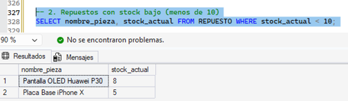
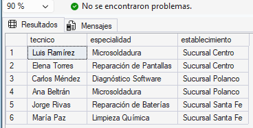
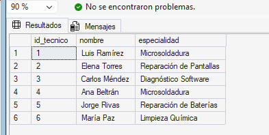
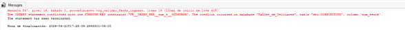
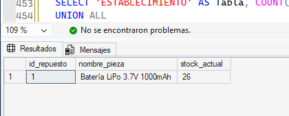
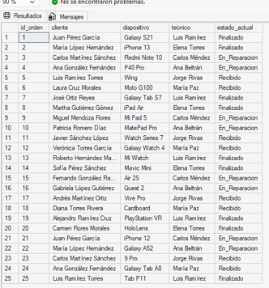

Resultados de proyecto de base de datos para CiberTech
Proyecto CyberCore Tech — Sistemas Manejadores de Bases de Datos.
Diseñar una base de datos desde cero.
Implementarla en un motor real (SQL Server).
Consultarla eficientemente con SQL.
Protegerla con mecanismos de seguridad e integridad.
Manejar situaciones de concurrencia reales.
Todo esto simula un entorno laboral donde un taller necesita gestionar clientes, dispositivos, técnicos, repuestos y órdenes de servicio de manera confiable y segura.
Montes Rangel Diana Paola
Alba Castañeda Antonio Saul
Avila Rivera Jose Azael
Bocardo Suárez Andrea Guadalupe
Canchola Sanchez Ilse Alinne
Ramirez Illescas Pablo Alberto
Introducción al Sistema
Estrategia operacional y control de entidades de negocio.
Diseño Lógico del Negocio
La base de datos se llama Taller_de_Celulares y contiene 8 tablas interrelacionadas:

Diseño Físico de Base de Datos (DDL)
Claves primarias, foráneas para integridad referencial y restricciones CHECK para dominios válidos.
-- Creación de la base de datos e infraestructura
CREATE DATABASE Taller_de_Celulares;
GO
USE Taller_de_Celulares;
GO
CREATE TABLE ESTABLECIMIENTO (
id_establecimiento INT PRIMARY KEY,
nombre_sucursal VARCHAR(100),
direccion VARCHAR(200),
telefono VARCHAR(20)
);
CREATE TABLE CLIENTE (
id_cliente INT PRIMARY KEY,
nombre_completo VARCHAR(100),
correo VARCHAR(100),
numero VARCHAR(20)
);
CREATE TABLE DISPOSITIVO (
num_serie VARCHAR(50) PRIMARY KEY,
marca VARCHAR(50),
modelo VARCHAR(50),
tipo VARCHAR(50) CHECK (tipo IN ('Smartphone', 'Tablet', 'Smartwatch', 'Dron', 'VR', 'IA'))
);
CREATE TABLE PROVEEDOR (
id_proveedor INT PRIMARY KEY,
empresa VARCHAR(100),
contacto_ventas VARCHAR(100),
telefono VARCHAR(20)
);
-- Tablas con dependencias
CREATE TABLE TECNICO_ESPECIALISTA (
id_tecnico INT PRIMARY KEY,
id_establecimiento INT,
nombre VARCHAR(100),
especialidad VARCHAR(100),
certificacion VARCHAR(100),
FOREIGN KEY (id_establecimiento) REFERENCES ESTABLECIMIENTO(id_establecimiento)
);
CREATE TABLE REPUESTO (
id_repuesto INT PRIMARY KEY,
id_establecimiento INT,
id_proveedor INT,
nombre_pieza VARCHAR(100),
precio_unitario FLOAT,
stock_actual INT,
FOREIGN KEY (id_establecimiento) REFERENCES ESTABLECIMIENTO(id_establecimiento),
FOREIGN KEY (id_proveedor) REFERENCES PROVEEDOR(id_proveedor)
);
CREATE TABLE DETALLE_REPUESTOS (
id_detalle INT PRIMARY KEY,
id_orden INT,
id_repuesto INT,
cantidad_usada INT,
subtotal FLOAT,
FOREIGN KEY (id_orden) REFERENCES ORDEN_SERVICIO(id_orden),
FOREIGN KEY (id_repuesto) REFERENCES REPUESTO(id_repuesto)
);
CREATE TABLE ORDEN_SERVICIO (
id_orden INT PRIMARY KEY,
id_establecimiento INT,
id_cliente INT,
num_serie VARCHAR(50),
id_tecnico INT,
fecha_ingreso DATE,
diagnostico_previo VARCHAR(MAX),
estado_actual VARCHAR(20) CHECK (estado_actual IN ('Recibido', 'En_Reparacion', 'Finalizado')),
FOREIGN KEY (id_establecimiento) REFERENCES ESTABLECIMIENTO(id_establecimiento),
FOREIGN KEY (id_cliente) REFERENCES CLIENTE(id_cliente),
FOREIGN KEY (num_serie) REFERENCES DISPOSITIVO(num_serie),
FOREIGN KEY (id_tecnico) REFERENCES TECNICO_ESPECIALISTA(id_tecnico)
);

Estructura y Verificación de Esquema
Ejecución de procedimientos del sistema para validar la correcta declaración y metadatos de las tablas.
-- 5. Verificar la estructura de las tablas
EXEC sp_help 'ESTABLECIMIENTO';
EXEC sp_help 'CLIENTE';
EXEC sp_help 'DISPOSITIVO';
EXEC sp_help 'PROVEEDOR';
EXEC sp_help 'TECNICO_ESPECIALISTA';
EXEC sp_help 'REPUESTO';
EXEC sp_help 'ORDEN_SERVICIO';
EXEC sp_help 'DETALLE_REPUESTOS';
GO
-- Listar las 8 tablas de la base activa
SELECT TABLE_NAME
FROM INFORMATION_SCHEMA.TABLES
WHERE TABLE_TYPE = 'BASE TABLE';
Población de la Base de Datos
Inserción de tuplas de prueba controladas y verificación cuantitativa del estado de persistencia de las tablas.
-- Verificar cantidad de registros por tabla
SELECT 'ESTABLECIMIENTO' AS Tabla, COUNT(*) AS Registros FROM ESTABLECIMIENTO
UNION ALL
SELECT 'CLIENTE', COUNT(*) FROM CLIENTE
UNION ALL
SELECT 'DISPOSITIVO', COUNT(*) FROM DISPOSITIVO
UNION ALL
SELECT 'PROVEEDOR', COUNT(*) FROM PROVEEDOR
UNION ALL
SELECT 'TECNICO_ESPECIALISTA', COUNT(*) FROM TECNICO_ESPECIALISTA
UNION ALL
SELECT 'REPUESTO', COUNT(*) FROM REPUESTO
UNION ALL
SELECT 'ORDEN_SERVICIO', COUNT(*) FROM ORDEN_SERVICIO
UNION ALL
SELECT 'DETALLE_REPUESTOS', COUNT(*) FROM DETALLE_REPUESTOS;
GO
Consultas Multitabla (DML Complejo)
Explotación avanzada del almacenamiento relacional mediante la cláusula INNER JOIN para responder a necesidades operativas.
-- Reporte de Órdenes Avanzado
SELECT
o.id_orden, c.nombre_completo AS cliente,
d.modelo AS dispositivo, t.nombre AS tecnico,
o.estado_actual
FROM ORDEN_SERVICIO o
INNER JOIN CLIENTE c ON o.id_cliente = c.id_cliente
INNER JOIN DISPOSITIVO d ON o.num_serie = d.num_serie
INNER JOIN TECNICO_ESPECIALISTA t ON o.id_tecnico = t.id_tecnico;
-- Filtro Stock Bajo
SELECT r.nombre_pieza, r.stock_actual, p.empresa AS proveedor
FROM REPUESTO r
INNER JOIN PROVEEDOR p ON r.id_proveedor = p.id_proveedor
WHERE r.stock_actual < 10;
-- Técnicos por establecimiento
SELECT
t.nombre AS tecnico,
t.especialidad,
e.nombre_sucursal AS establecimiento
FROM TECNICO_ESPECIALISTA t
INNER JOIN ESTABLECIMIENTO e ON t.id_establecimiento = e.id_establecimiento;



Seguridad e Integridad Activa
Abstracción mediante vistas para ocultar datos sensibles y triggers de sustitución (INSTEAD OF) para blindar reglas cronológicas.
-- 1. Crear Vista de Seguridad
CREATE VIEW vista_tecnicos_segura AS
SELECT id_tecnico, nombre, especialidad FROM TECNICO_ESPECIALISTA;
GO
-- 2. Trigger para Restricción de Fecha Lógica
CREATE TRIGGER trg_validar_fecha_ingreso
ON ORDEN_SERVICIO INSTEAD OF INSERT AS
BEGIN
IF EXISTS (SELECT 1 FROM inserted WHERE fecha_ingreso > CAST(GETDATE() AS DATE))
BEGIN
RAISERROR('La fecha de ingreso no puede ser futura', 16, 1);
ROLLBACK TRANSACTION;
RETURN;
END
ELSE
INSERT INTO ORDEN_SERVICIO SELECT * FROM inserted;
END;
GO
INSERT INTO ORDEN_SERVICIO VALUES (99, 1, 1, 'SN001', 1, '2026-01-01', ...);

Concurrencia y Técnicas de Bloqueo
Gestión transaccional explícita para evitar lecturas sesgadas y asegurar actualizaciones en el inventario.
BEGIN TRANSACTION;
DECLARE @stock INT;
SELECT @stock = stock_actual FROM REPUESTO WHERE id_repuesto = 1;
IF @stock >= 1
BEGIN
UPDATE REPUESTO SET stock_actual = stock_actual - 1 WHERE id_repuesto = 1;
INSERT INTO DETALLE_REPUESTOS (id_detalle, id_orden, id_repuesto, cantidad_usada, subtotal)
VALUES (36, 1, 1, 1, 150.50);
COMMIT;
PRINT 'Transacción completada.';
END
ELSE
BEGIN
ROLLBACK;
PRINT 'Stock insuficiente. Operación abortada.';
END;
GO
Conclusiones Generales
Cierre normativo e industrial del proyecto.
